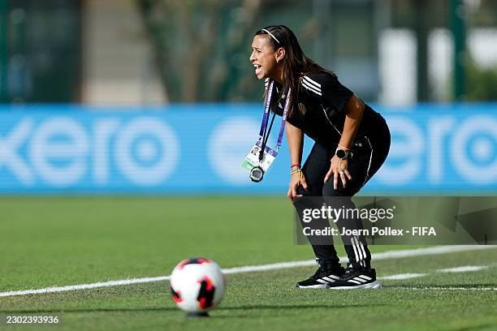

Venezuela Coach Frías Reacts to U-17 World Cup Defeat Against Nigeria
Venezuela coach Dayana Frías acknowledged that a late error cost her side a 1-0 loss to Nigeria's Flamingos in the 2026 U-17 Women's World Cup quarter-finals.
Al-Nassr secured a dominant 6-2 victory against Uzbekistan's Pakhtakor in their AFC Champions League Elite match on Monday, despite playing without Portuguese star Cristiano Ronaldo.
Head coach Ange Postecoglou chose to leave Ronaldo out of the squad alongside Kingsley Coman and Mohamed Simakan for the journey to Tashkent. According to Punch, citing reports from The Independent, Postecoglou stated that the decision was taken because of match pressures and heavy travel demands.
The trip took place amid broader security concerns in the region following alleged missile strikes directed at Saudi Arabia by Houthi rebels from Yemen. According to Associated Press reports cited by Punch, previous matches in the tournament had suffered delays and postponements due to these safety issues.
During the fixture at Pakhtakor Central Stadium, Al-Nassr quickly took control of the game. Abdullah Al-Hamdan opened the scoring in the 15th minute, while João Félix added two goals before the break. Second-half finishes from Abdulelah Al-Amri, Abdulrahman Ghareeb, and Ângelo completed the comprehensive win, while Flamarion and Dostonbek Khamdamov scored for Pakhtakor.
Saudi Press Agency reported that the result marked Al-Nassr's second triumph in the continental competition, moving the team to fourth place in the West Region standings with six points.
Ronaldo had previously recorded a hat-trick during Al-Nassr's 5-3 league victory against Al-Kholood, bringing his season tally to nine goals in 12 appearances and extending his career record to 985 total goals.
Sources: Punch
← More Sports stories
Venezuela coach Dayana Frías acknowledged that a late error cost her side a 1-0 loss to Nigeria's Flamingos in the 2026 U-17 Women's World Cup quarter-finals.
Mercedes driver Kimi Antonelli has become the youngest Formula One world champion after finishing third at the Mexico City Grand Prix, Vanguard reports.

Galatasaray winger Rafael Leao has thanked Victor Osimhen for handing him a penalty kick to score his first goal for the club against Konyaspor.